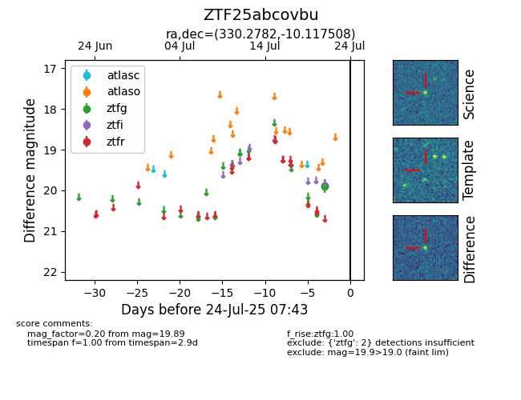

Target ZTF25abcovbu at 2025-07-24 07:43, see:
FINK: fink-portal.org/ZTF25abcovbu
Lasair: lasair-ztf.lsst.ac.uk/objects/ZTF25abcovbu
ALeRCE: alerce.online/object/ZTF25abcovbu
alt names
ZTF25abcovbu (ztf,fink)
coordinates:
equatorial (ra, dec) = (330.2782,-10.11751)
galactic (l, b) = (47.5864,-46.48762)
photometry
last ztfg=19.89
2 ztfg detections
